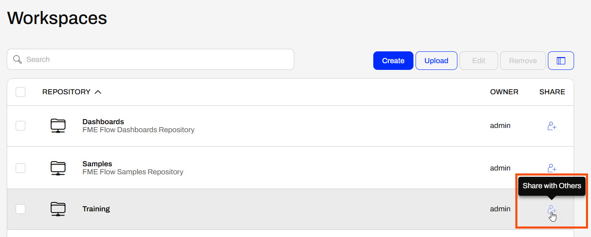
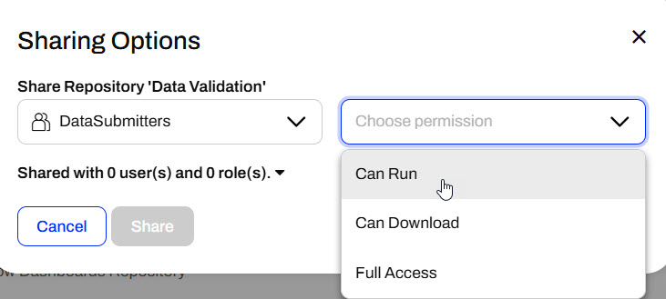
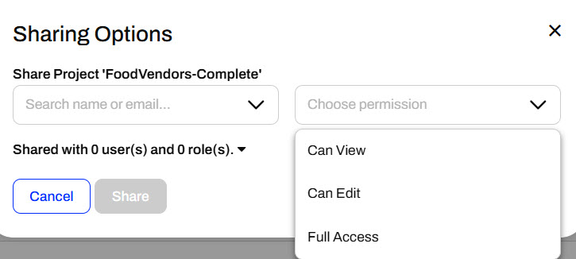
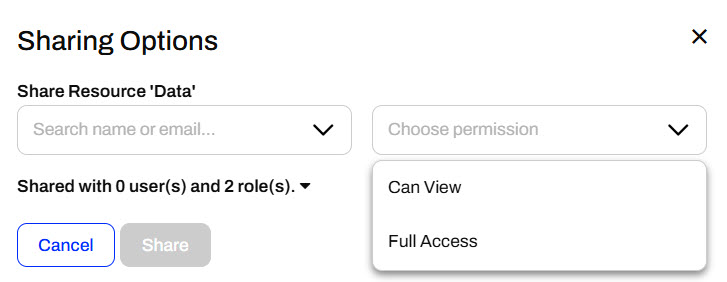
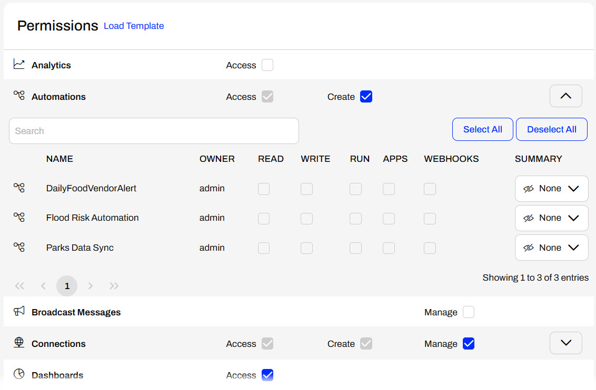
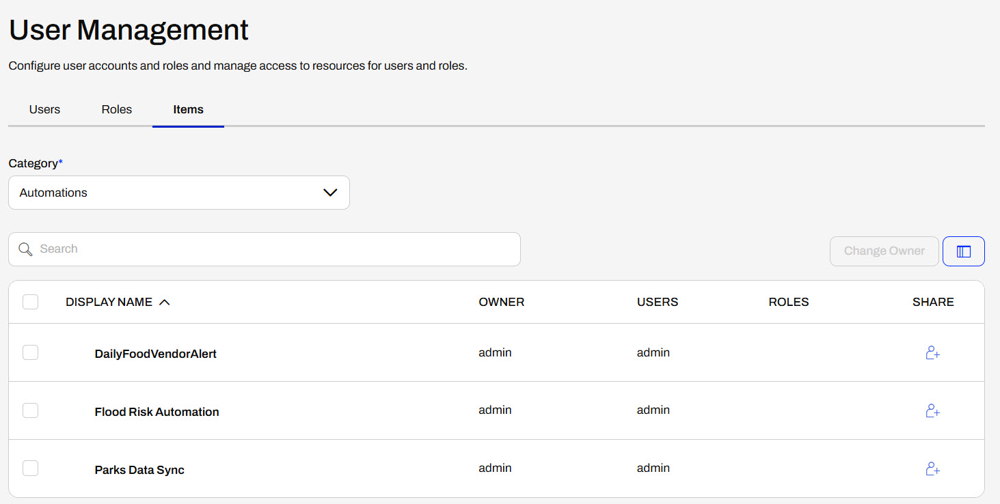

Learning Objectives
After completing this lesson, you'll be able to:
- Understand how to share items and roles with FME Flow users.
- Share a workspace by sharing a repository.
- Control access to items through sharing.
Resources
- Starting project | C:\FMEData\Workspaces\DeployWorkflowsWithFMEFlow\deploy-workspaces-with-fme-flow--starting-project.fsproject
Sharing FME Flow Content
FME Flow security and permissions work together to restrict and allow access to FME Flow items. It's essential to ensure users have access to the items they're supposed to, and oftentimes, only the admin account has access to all items on an FME Flow instance.
You have full permissions when you create an item; however, that does not mean your colleague can access it when needed. Depending on the permissions set up for each user to access FME Flow items, the easiest way for FME Flow users to collaborate and access the same content is by sharing it across users and roles.
Generally, sharing content on FME Flow follows one of these methods:
- Sharing an item with other FME Flow users through the Sharing Options dialogue, such as sharing a repository or an automation
- Sharing an item with others through Flow Apps, Webhook URLs, or the FME Flow REST API
- Adding content to an FME Flow Project, exporting it, and importing it into another FME Flow
Sharing a Repository
When you choose the Workspaces menu option in the FME Flow web interface, you will see a list of the repositories you can access.
If you own a repository, you can click the button to Share with Others.

A pop-up dialog appears where you select a user or role and choose the level of permission that you wish to give them.

Users and roles also impact FME Flow security. Roles are analogous to a group of users. When sharing an item, you may select a combination of users and roles to give permissions. For example, you can give anyone in the fmeuser role the ability to run workspaces in a repository.

Security is a critical capability. You may create workspaces for multiple users on FME Flow. However, they must have access to use the workspace. The Sharing Options dialog allows you to give others access to your workspace without needing the advanced User Management permissions.
Sharing Items
You share other items on FME Flow the same way you share repositories. The only options that differ are the level of permissions that you may grant to the user or role you're sharing with. For example, you can share Projects, which group FME Flow content together. The permissions options include options to view and edit the project, which differ from the Can Run and Can Download options for repositories. You will learn more about Projects in the following lessons of this course.


For example, when you share a Resource folder, you can only allow users to view the content or assign them full access.

User Management
An FME Flow administrator may also manage access to items directly in User Management through Users, Roles, or Items. Permissions for users and roles work the same. You may grant permissions to all features and functions of FME Flow, or on an item basis. Some features have different levels of permissions, including Access, Create, and Manage.

For items, you would select the content category on FME Flow and then grant permissions by sharing items to users or roles. You will see the same Sharing Options here when sharing from the item itself.

Exercise

Frank, a GIS and FME Flow administrator, has a CAD data validation workspace on FME Flow for his city's Engineering and GIS departments. The workspace validates water line data and is running successfully as expected. Frank needs to share it with his colleagues so they can access and use the workspace on FME Flow.
For this exercise, follow along with Frank's steps.
If you're taking a live Safe Software-hosted training course or using an on-demand lab for this course, we've already imported the content required for this lesson into your FME Flow.
If you're completing this lesson with your own FME Flow, you must import the starting project with the content into your FME Flow. If you don't want to import this project on your own FME Flow, you can use existing content that you've created or Samples workspaces to share content.
Expand for Steps to Import the Starting Project
3) Navigate to your FME Flow and open Projects. Click Import.
4) Upload deploy-workflows-with-fme-flow--starting-project.fsproject as the Project File and then click Import.
5) The first step is Preview Content, where you may choose not to overwrite existing items. If all your items are New Items, you don't need to worry about overwriting existing items. Click Continue.
6) The next step is to select connections and tokens to import. By default, FME Flow does not select them for import. Select both the FME Training PostGIS Database Connection and the Workspace App - Data Validation Token to import. If you do not import these, the workflows will not run successfully. Click Continue.
7) The Resolve Owners step only allows you to reassign the project contents to a different user if the admin user doesn't exist on your FME Flow. Click Continue and then click Import Project from the Additional Options step. The project will import and display its import status from the same page.
If the project import failed, check that you uploaded the encryption key and repeat the process. If it still fails, contact us at train@safe.com.